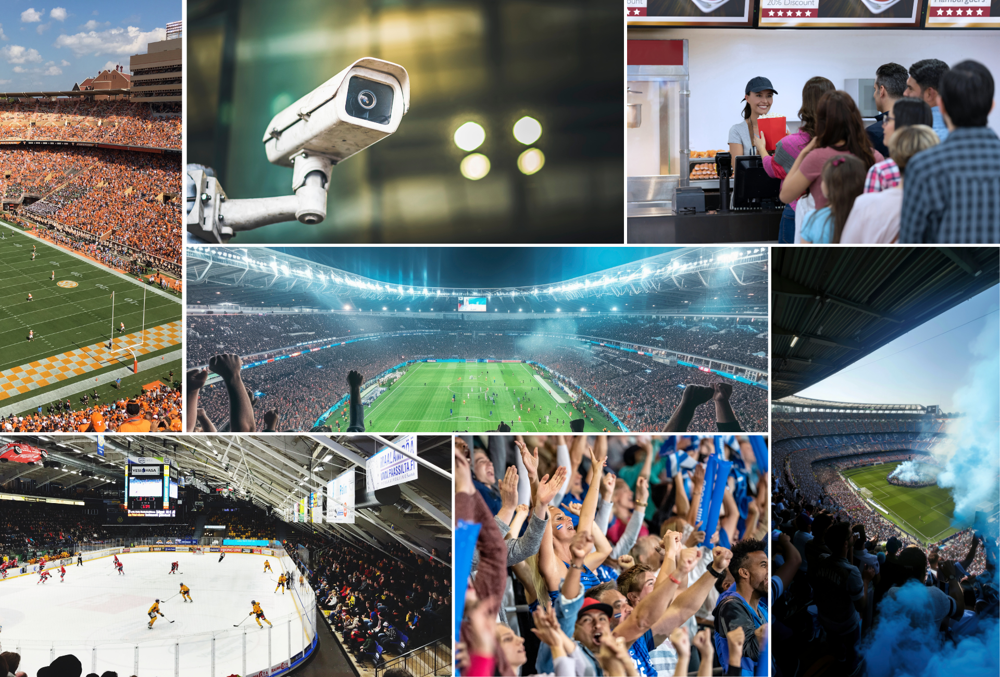

카메라로 경기 당일 인텔리전스를 만듭니다 Turn Cameras Into Game-Day Intelligence
Vaidio AI Vision Platform은 기존 영상 인프라로 경기장 안전, 인력 배치, 팬 경험을 스마트하게 관리합니다. Vaidio's AI Vision Platform gives stadiums a smarter way to manage safety, staffing, and the fan experience using existing video feeds.

핵심 기능 및 효과 Key Features & Benefits
보안·안전 강화 Enhance Security & Safety
접근 침해·배회·무기·인파 급증을 즉시 감지하고 알림 및 포렌식 도구로 신속히 대응합니다. Detect access breaches, loitering, weapons, and surges instantly; respond fast with alerts and forensic tools.
팬 경험 향상 Improve Fan Experience
매점 대기 시간을 줄이고 관중 유도를 지원하며 시설 청결도를 유지하여 팬 만족도와 수익을 높입니다. Reduce concession wait times, help direct crowds, and ensure cleaner facilities for happier fans and more revenue.
운영 최적화 Optimize Operations
실시간 점유 데이터와 사건 감지로 보안·청소·안내 인력을 필요한 곳에 즉시 배치합니다. Use live occupancy data and incident detection to deploy security, janitorial, and guest services where needed most.
주요 과제와 Vaidio 솔루션 Key Challenges & Vaidio Solutions
수백 개의 카메라를 인력만으로 효과적으로 모니터링하기 어렵습니다. Too many cameras for staff to monitor effectively, resulting in missed incidents.
AI가 배회·무기·미인가 접근을 실시간 감지하여 즉각 알림을 전송합니다. AI detects loitering, weapons, and unauthorized access in real time, delivering instant alerts.
싸움·낙상·인파 급증에 대한 식별과 대응이 늦어집니다. Delays in identifying and responding to fights, falls, or crowd surges.
AI가 이상 활동을 즉시 감지하고 타임스탬프 영상을 전송하여 신속한 조치를 지원합니다. AI flags unusual activity and sends time-stamped video for faster response and action.
대기 시간이 길어 팬 만족도와 매출이 저하됩니다. Long lines hurt satisfaction and concession sales.
줄 길이를 모니터링하고 더 짧은 줄로 게스트를 안내하여 회전율을 높입니다. Monitor queue lengths and redirect guests to shorter lines to improve throughput.
Vaidio를 선택하는 이유 Why Choose Vaidio
Sub-2초 검색 Sub-2-Second Search
100대 이상의 카메라에서 신속하게 사건을 찾아 수동 검토보다 1,000배 빠릅니다. Locate incidents fast across 100s of cameras—1,000x faster than manual review.
커스텀 알림 Custom Alerts
중요한 이벤트에만 알림을 보내도록 임계값을 조정하여 알림 피로를 방지합니다. Notify staff only for the events that matter—tuned to your thresholds to avoid alert fatigue.
모든 카메라 호환 Works with Any Camera
기존 인프라와 통합되며 여러 경기장에 걸쳐 확장 가능합니다. Integrates with existing infrastructure and scales across venues—no rip-and-replace.
경영진 ROI 입증 Proven ROI for Executives
안전 강화, 게스트 경험 향상, 영상 분석 투자 수익을 측정 가능한 지표로 제공합니다. Improve safety, elevate guest experience, and prove ROI on video analytics investment with measurable metrics.
경기장 / 대형 시설 AI 영상분석 도입을 검토 중이신가요? Ready to Transform Your Stadiums & Large Venues Operations?
퓨텍솔루션즈 전문가와 함께 귀사 환경에 최적화된 Vaidio 솔루션을 검토해 보세요. Work with Futec Solutions specialists to explore the optimal Vaidio solution for your environment.